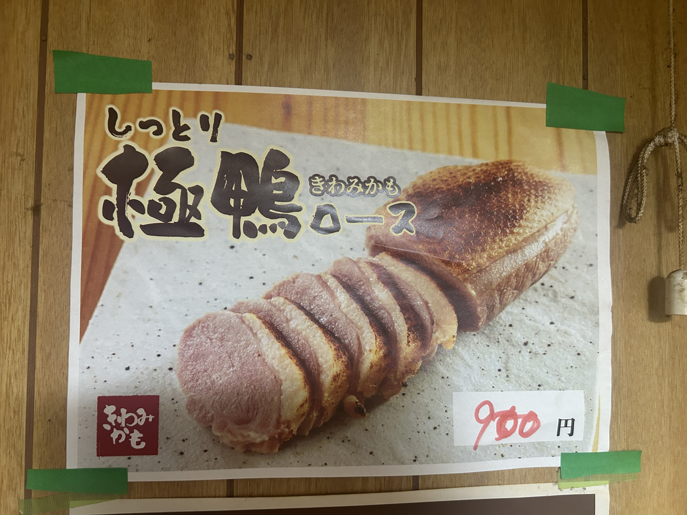
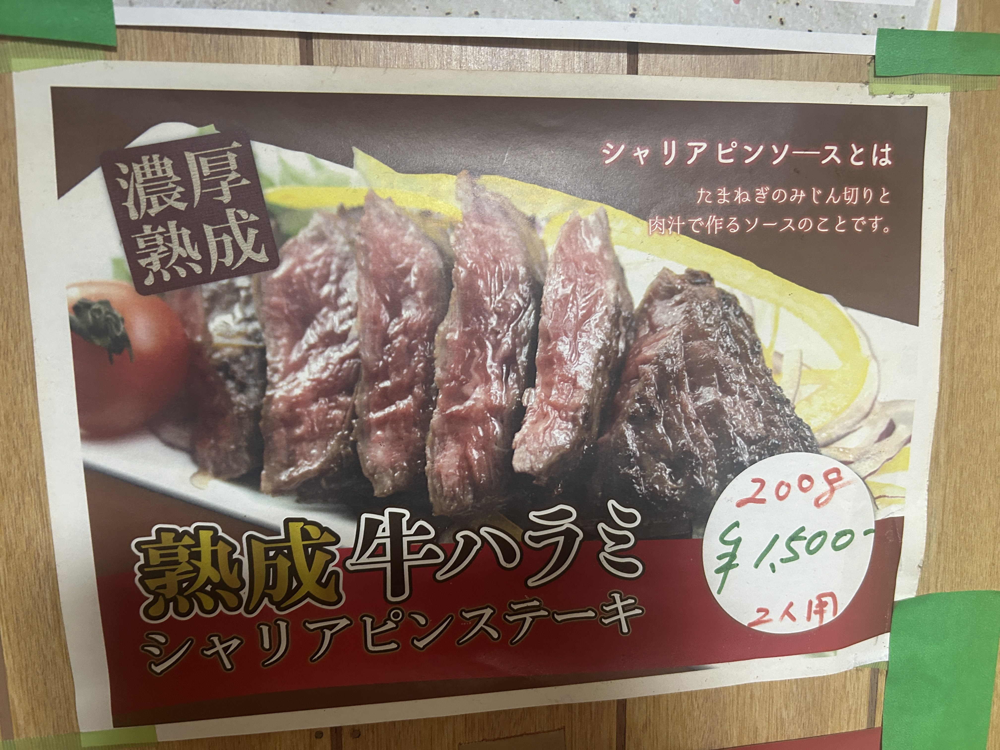

I feel at home.
お好み焼き居酒屋 かどちゃん
神奈川県海老名市門沢橋 一軒家レストラン
Concept
忙しすぎて、目の前にある大切なものさえ
見失いそうな時——
温かい鉄板を囲んで、
ただ自分に戻る時間を過ごしてほしい。
そんな想いでお好み焼きを焼いています。
"sometimes you can't even see what's right in front of you"
一軒家レストラン
門沢橋駅 徒歩3分
Master
鉄板の温度を見極める、真剣な眼差し。
長年の経験が、ただ一枚の仕上がりに宿る。
ジュー…
鉄板に落ちた生地が奏でる音。
その音を聞けば、お腹が鳴る。
長年使い込まれたヘラを握る手。
その重さと温もりが、
一枚一枚に刻まれている。
─ マスターのひと言 ─
Gallery


Access & Info
| 店名 |
かどちゃん お好み焼き・居酒屋 |
|---|---|
| 住所 |
〒243-0413 神奈川県海老名市門沢橋2-6-10 Google マップで開く |
| 最寄り駅 |
相模鉄道 門沢橋駅 徒歩約3分（227m） |
| 営業時間 |
17:30 〜 24:00 ※日によって変更の可能性あり |
| 定休日 |
不定休 事前にご確認ください |
| 駐車場 |
あり 店舗横に複数台駐車可能 |
| 施設 | 一軒家レストラン |
※ 営業時間・定休日は変更となる場合がございます。
ご来店の際は事前にご確認いただくことをおすすめします。
神奈川県海老名市門沢橋2-6-10
— かどちゃん マスター